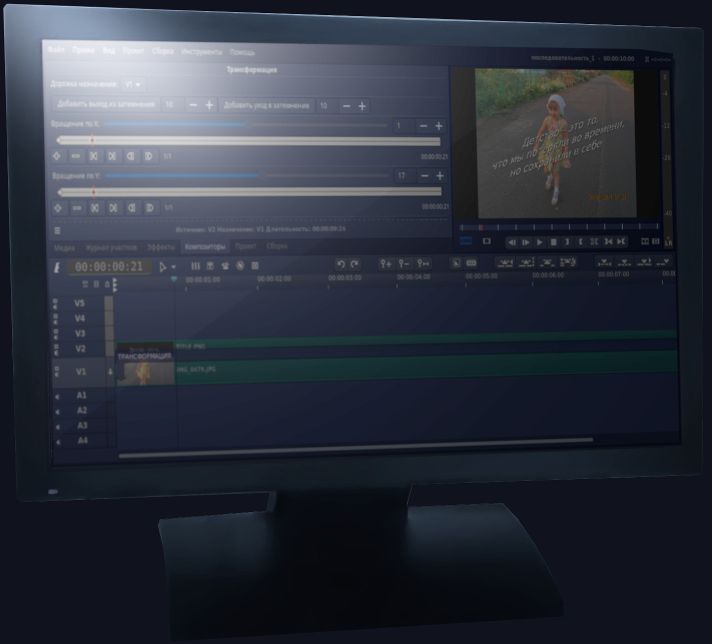

Бесплатный и свободный видеоредактор
Бесплатный и свободный видеоредактор
Flowblade - многодорожечный нелинейный видеоредактор, выпущенный под лицензией GPL3. Flowblade поможет, как новичку, так и опытному пользователю воплотить свои творческие идеи, по созданию видеороликов в жизнь.
Flowblade поддерживает все кодеки, которые в целом могут быть доступны в системе Linux, так как, он работает в качестве интерфейса для библиотеки FFMPEG. При запуске в терминале, мы видим сообщение о том, что для работы, нам доступны: 161 формат, 94 видеокодека и 70 звуковых кодеков.
Набор стандартных средств редактирования в сочетании с принятой в Flowblade концепцией постоянной вставки - или «магнитного монтажного стола», как называют некоторые, - облегчают добавление, перемещение и обрезку клипов.


Объединяйте и смешивайте видео, изображения и звук с помощью мощных инструментов. Тонируйте видеоролики в соответствии с вашим видением и изменяйте звук, для получения того настроения, которое вы хотите выразить.
G'MIC - это мощная технология фильтрации изображений с открытым исходным кодом, которую Flowblade предоставляет в виде отдельного инструмента. Смотрите демонстрационное видео.
"Когда я наткнулся на Flowblade, он сразу мне понравился. Я редактирую в нём фильмы продолжительностью от 2 до 3 часов используя большое количество видеоклипов. Очень удобно, когда клипы автоматически склеиваются друг с другом, особенно во время удаления плохих участков и перемещения видео.", dnsXXXXX
"Мы - группа немецких студентов - в настоящее время снимаем фильм для школьного проекта, мы познакомились с несколькими свободными видеоредакторами и решили остановиться на Flowblade.", "... С этого момента всё стало получаться хорошо — наконец больше никаких сбоев! Множество эффектов, про которые я думал, что просто придётся забыть, теперь снова мне доступны. Спасибо за вашу поддержку - Flowblade rocks!", R.W, Germany
"Я профессиональный оператор монтажа и режиссер, со стажем работы более 15 лет здесь, в Италии... [Flowblade] уже показывает, что в нём заложен большой потенциал, так как видно, что разрабатывают его люди имеющие представление, каким должен быть видеоредактор, для реального его использования.", M.S, Italy
{kind=link}
{kind=link}